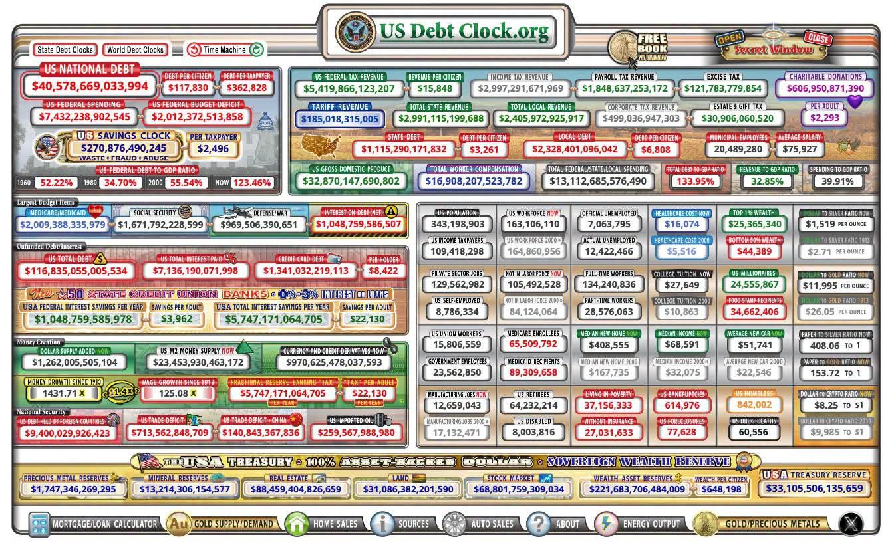
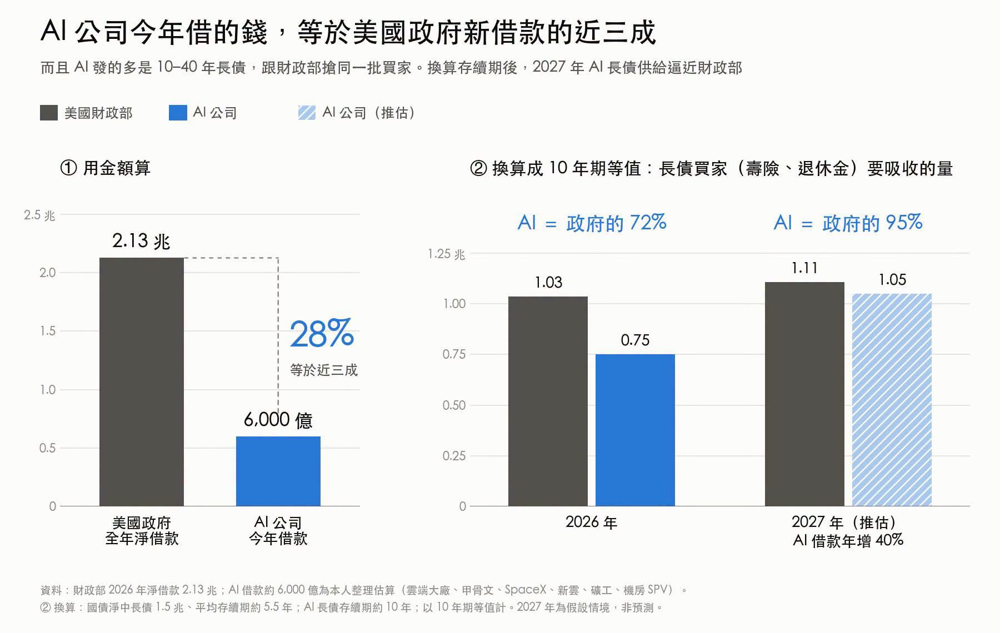
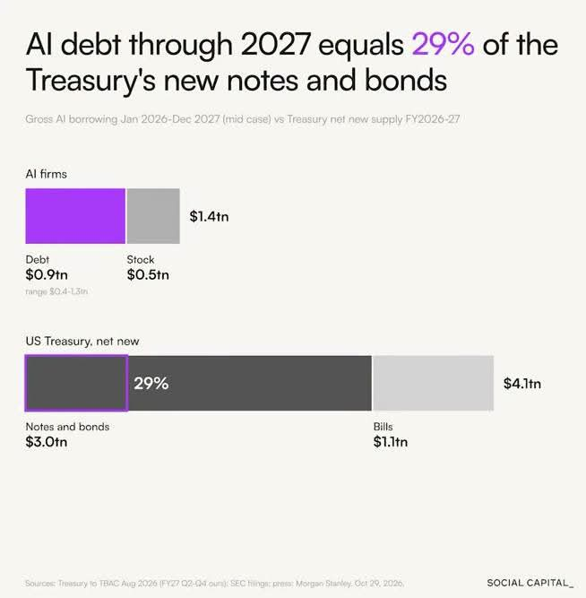
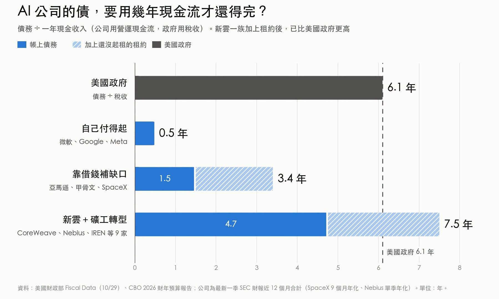
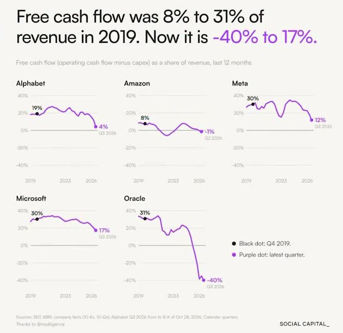

與美國國債搶長債買家 · 連圖整理
AI 相關公司今年合共借了約 6,000 億美元，相當於美國政府全年淨借款的近三成（28%）。存量上 AI 公司的債只佔國債 2%，但流量和年期才是問題：AI 發的大多是 10 至 40 年長債，與財政部搶同一批買家——壽險和退休基金。

美國財政部最新數字（10/29）：國債總額 40.6 兆美元；2026 財年政府收入 5.4 兆、支出 7.4 兆、赤字 2.0 兆、淨利息約 1.05 兆。換算成 10 年期等值，今年 AI 長債供給已是財政部的 72%；若 AI 借款明年再增 40%，將升至 95% 以上。高盛估計明年光是雲端大廠就要發債 4,200 億美元，較今年的 2,500 至 2,800 億多五至七成；要守在國債三分之一以下，明年 AI 借款最多只能多借 22% 至 39%，難度很高。


作者把 15 家 AI 公司按「債務 ÷ 一年營運現金流」分三組（美國政府以稅收計為 6.1 年）：
・自己付得起（微軟、Google、Meta）：營運現金流 5,086 億大於資本支出 4,001 億，一年多出 1,085 億；債務 2,453 億，約半年現金流可還清；手上現金 4,120 億比債務還多。
・靠借錢補缺口（亞馬遜、甲骨文、SpaceX）：營運現金流 2,327 億、資本支出 3,550 億，一年缺 1,224 億；債務 3,446 億（1.5 年現金流），計入未起租租約 4,530 億後升至 3.4 年。
・新雲＋礦工轉型（CoreWeave、Nebius、IREN、Applied Digital、Cipher、TeraWulf、Hut 8 等 9 家）：營運現金流只有 176 億，資本支出 600 億，缺口是現金流的 2.4 倍；債務 834 億（4.7 年），計入租約後 7.5 年，比美國政府的 6.1 年還高。
五大雲端（微軟、亞馬遜、Google、Meta、甲骨文）近 12 個月營運現金流合計約 7,240 億，最新資本支出指引合計約 8,300 億，整體已經差約 1,000 億。


借不到或不想借，就把資本支出搬離資產負債表：甲骨文投資人日示範，每 GW 機房設備原本要先投 370 億，供應商分期付七成後前兩年只要出 180 億，客戶自備晶片更只要 60 億。其他招式包括客戶預付、機房放入 SPV、長期租約不上表。但錢沒有消失，只是換人扛——供應商、客戶、私募信貸。輝達手持淨現金，6 月仍發了 250 億美元債，同時替 OpenAI 的機房租約擔保 1,085 億。
10 年期美國國債 4.93%（10/30）；Google 今年發債平均票面 5.55%，平均 15 年，比國債高約 0.6 個百分點；SpaceX 2056 年到期債比國債高 2.36 個百分點，5 年期信用違約交換（CDS）由 6 月的 1.10% 升到 1.94%；CoreWeave 新發票據票面 9.6 至 9.75%，次級市場殖利率約 15%，利息已吃掉營收的 25%，比美國政府利息佔收入約兩成還高。政府可以印錢續借，新雲公司不行——債到期借不到新錢就出事。
甲骨文債務 1,295 億美元，加上未起租租約 2,880 億，合計超過其市值 3,960 億；信用評等只比垃圾級高一級，一旦被降級，將是史上最大的「墮落天使」，約 1,300 億債要擠進高收益債市場。另一邊廂，收錢的供應商在還債：美光債務一年內由 115 億降到 28 億；美光、蘋果、博通、威騰、希捷、SanDisk、科林研發合計一年還了約 440 億。
作者估計今年 AI 債供給或推高長期利率 0.1 至 0.2 個百分點；10 年期若升破 5.1%，股市估值開始承壓。反過來，若 AI 公司信用先出事，資金會逃入國債、利率反而下跌（10 月 30 日半導體大跌當日 10 年期就跌了 0.06 個百分點）。最值得盯的一個數字：營運現金流年增率有沒有追上資本支出年增率。日程上：11 月 4 日財政部公布長債標售規模、12 月中甲骨文財報（扣客戶預付後的自由現金流與信評展望）、明年 1 至 2 月雲端大廠財報與 2027 年資本支出指引、2027 年 3 月軟銀 400 億美元過橋貸款到期。作者披露持有 NVDA、NBIS、SPCX，未持有 MSFT、GOOGL、META、AMZN、ORCL、CRWV、IREN 等。
事實整理，無買賣建議。數字來源：美國財政部 Fiscal Data、CBO 2026 財年報告、各公司 SEC 財報（近 12 個月合計）、Sheraton Wu 研究帖（2026-11-02）；AI 借款總額與 10 年期等值換算為作者整理估算，未經獨立核實。